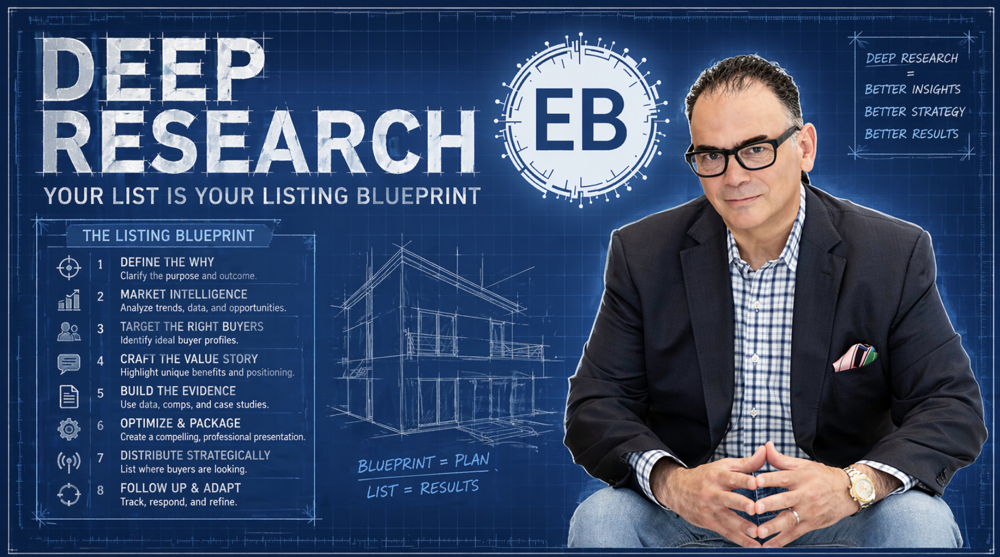

Complete Implementation Workbook
Edmund's Mastermind Live Session
Wednesday, April 29, 2026 | 9:00 AM ET
Edmund's Mastermind
Group Coaching for Elite Realtors
Your Money-Making Mission
Why You're Here
To install a 10-minute intelligence system that turns every listing appointment into a signed contract — by walking in more prepared than any agent you'll ever compete against.
Your Goal Today
Master the Property X-Ray, Neighborhood Dossier, and Seller Psychology Profile — and run your first live research cycle during the session.
Success Metric (30 Days)
Win at least 2 additional listings this month using your new intelligence system — conservatively worth $15,000–$40,000+ in commission.
Workshop Overview: Your Listing-Winning Toolkit
The 3 Intelligence Systems You'll Master:
1. The Property X-Ray — Know the property better than the seller. Purchase history, permits, liens, ownership chain, and market positioning in 10 minutes.
2. The Neighborhood Dossier — Build a 12-page hyper-local market intelligence report that makes every other agent's CMA look like a grocery receipt.
3. The Seller Psychology Profile — Decode motivation before you knock. Know their "why," their pressure points, and the exact number that gets the signature.
The Tool Stack
| Tool | Best For | Cost |
|---|
| ChatGPT Deep Research | Full-property dossiers, multi-source synthesis | $20/mo (Plus) |
| Perplexity Pro | Real-time web data, recent listings, local news | $20/mo |
| Claude | Seller psychology, motivation analysis, scripting | $20/mo |
You don't need all three to start. Pick one and run the system today.
System 01
The Property X-Ray
The $40,000 Preparation Gap Killer
What This Means for Your Bank Account
- Win more listings: Every appointment you out-prepare is a commission you capture.
- Win at higher prices: Sellers sign faster when they believe you understand the asset better than they do.
- Win against local "veterans": Neutralize 20-year market experience with 10 minutes of AI-powered intelligence.
The Intelligence Technology Behind Your Advantage
What Deep Research Actually Does
Deep research tools don't "search" — they investigate. ChatGPT Deep Research, Perplexity Pro, and Claude can spend 5-15 minutes reading 30-50 web sources on your behalf, cross-referencing public records, tax data, MLS history, news, and permit filings, then synthesize it all into a single intelligence brief. This is the equivalent of handing an unpaid junior analyst a full research assignment — except it's done before you finish your coffee.
Why This Changes Everything in Listings
The listing appointment has always been decided in the first 90 seconds. It's a competence test. The agent who sounds most prepared wins. Historically, "most prepared" meant "most experienced." Now it means "most intelligent" — and intelligence is now on-demand. A 30-year veteran is still guessing at the permit history. You'll quote the dates.
The Early Adopter Advantage
In six months this will be table stakes. Right now, fewer than 3% of agents are running deep research before listing appointments. That gap is your moat — but only if you act before your market catches up. The top producers in every major market are already doing this quietly.
Real Revenue Applications
- Pre-appointment briefing (10 min before you walk in the door)
- Pricing confidence — knowing permit investments justifies your number
- Objection preemption — you address the seller's concern before they raise it
- Marketing angle generation — the renovation history IS the listing's story
- Due diligence warnings — flag title issues before they kill a deal
System 01 — Copy-Paste Prompts
The Property X-Ray: Profit-Generating Prompts
Copy these directly into ChatGPT Deep Research, Perplexity Pro, or Claude. Replace bracketed text with the listing details.
Prompt 1 — Full Property Intelligence Dossier
You are a senior real estate research analyst preparing a listing appointment brief. Build a complete intelligence dossier on the property at [FULL ADDRESS, CITY, STATE, ZIP].
Include: (1) purchase history with dates and prices, (2) tax assessment history for the last 5 years, (3) permit filings and recorded renovations, (4) any recorded liens, judgments, or encumbrances, (5) prior listing attempts with dates, list prices, DOM, and withdrawal/sale outcomes, (6) estimated current mortgage balance based on public records, (7) any news mentions or public records about the property or its owners.
Cite every source. Flag anything unverifiable. End with a "Listing Appointment Briefing" section summarizing the 5 things I must know before I walk in the door.
Prompt 2 — Ownership Chain & Owner Profile
Research the current owners of [ADDRESS]. I need: (1) full ownership history including prior owners, (2) how long current owners have held the property, (3) any LLC or trust ownership structures, (4) the owners' business affiliations and professional backgrounds (LinkedIn, business filings, news), (5) any other properties they own in [COUNTY/STATE], (6) recent life-event signals — job changes, relocations, divorces, deaths, business sales — that might be motivating the sale.
Be thorough but only use public sources. Flag anything speculative.
Prompt 3 — Renovation & Permit Archaeology
Pull the complete permit history for [ADDRESS]. For each permit: date filed, type of work, estimated value, contractor on record, and whether it was closed/finalized. Then calculate the total documented capital investment in the property and identify any major systems that have NOT been updated (roof, HVAC, electrical, plumbing, impact windows if Florida).
End with a one-paragraph summary of the "renovation story" I can use to justify my listing price.
Prompt 4 — Prior Listing Attempts & Market History
Has [ADDRESS] been listed for sale before? If so, for each prior listing: the list agent, brokerage, list date, original price, final price, days on market, whether it sold or was withdrawn, and any price reductions with dates. If it was withdrawn, investigate why (news, owner changes, refinance events). Include any rental listings as well.
Conclude with: what this listing history tells me about the owner's expectations and past disappointments.
Prompt 5 — The "What the Seller Doesn't Want You to Know" Audit
Investigate [ADDRESS] for any issues a seller might not volunteer: open permits, code violations, unpaid HOA dues, pending litigation, insurance claims, flood zone or sinkhole risk changes, boundary disputes, environmental concerns, or adverse proximity issues (new development, zoning changes, infrastructure projects). Check local news, municipal records, and public databases.
Flag everything as "Confirmed" or "Signal — verify before listing."
Prompt 6 — The 10-Minute Appointment Briefing Summary
Take everything you've gathered on [ADDRESS] and the owners and compress it into a 1-page listing appointment briefing. Structure:
1. THE 3 THINGS I MUST KNOW before I walk in
2. THE SELLER'S LIKELY MOTIVATION (best guess based on signals)
3. 3 TALKING POINTS that will demonstrate I've done my homework
4. 2 POTENTIAL OBJECTIONS and how to preempt them
5. MY CONFIDENCE PRICE RANGE with rationale
Keep it tight. I'm reading this in the car 10 minutes before I knock.
System 01 — Live Demo Worksheet
The Property X-Ray: Your Success Notes
During the live demo, capture the following:
Specific ways I can use this for my business:
My first target address to run this on (after the session):
Tip: Pick an upcoming listing appointment, a FSBO you're chasing, or an expired listing.
Estimated impact on my business:
Current prep time per appointment
hours
New prep time with Property X-Ray
hours (target: 10 min)
Projected commission impact (next 90 days):
If I win 1 additional listing per month using this system, at my average commission of $ , that equals:
$ in new commission over the next 90 days
First 3 addresses I'll run the Property X-Ray on this week:
1.
2.
3.
Questions I want to ask Edmund during Q&A:
System 02
The Neighborhood Dossier
The CMA-Killer That Wins Luxury Listings
What This Means for Your Bank Account
- Higher list prices accepted: Sellers sign at YOUR number when you document the market story.
- Luxury listings won: High-end sellers demand institutional-grade analysis. Now you can deliver it.
- Referrals multiplied: The Neighborhood Dossier becomes a leave-behind that ends up on neighbors' coffee tables.
The Market Intelligence Layer Above The MLS
Why A CMA Is No Longer Enough
Every agent pulls the same comps. The MLS is a commoditized data source. The Neighborhood Dossier adds the layers the MLS doesn't capture: new development pipelines, zoning shifts, school boundary changes, tax increment districts, luxury amenity openings, and — critically — what the other agents in this zip code are doing right now. Sellers don't sign because of comps. They sign because they believe you understand the market's future, not just its past.
Why This Changes Everything
For 40 years, the agent with the thickest CMA won. Now the agent with the best market narrative wins. Deep research tools can build that narrative in minutes — pulling news, permits, municipal planning docs, real estate industry reports, and competitive agent activity into a single cohesive story about where this specific neighborhood is headed.
The Early Adopter Advantage
Most agents are still copying Zillow's "market trends" graph into a listing presentation. That's embarrassing. You'll deliver a 12-page branded intelligence brief that reads like something a private wealth firm would produce. That's the gap. It's wide right now. It will close.
Real Revenue Applications
- Listing presentation leave-behind (sellers show it to neighbors — free referrals)
- Pre-listing seller education (softens them to your pricing)
- Buyer presentation at a new price point ("why this neighborhood is underpriced")
- Open house lead magnet (emails for the full report)
- Social media content engine (pull quotes, charts, insights for weeks)
System 02 — Copy-Paste Prompts
The Neighborhood Dossier: Profit-Generating Prompts
Prompt 1 — The Hyper-Local Market Intelligence Report
Build a comprehensive market intelligence report on [NEIGHBORHOOD/COMMUNITY NAME], [CITY, STATE, ZIP].
Cover: (1) 5-year price-per-square-foot trend, (2) average days-on-market trend by year, (3) inventory levels and absorption rate, (4) list-to-sale price ratios, (5) recent notable sales above $[PRICE POINT], (6) active and upcoming new construction projects, (7) infrastructure or zoning changes in the last 24 months, (8) school rating changes, (9) any news about luxury amenities opening nearby, (10) demographic shifts.
End with a "Where This Market Is Heading" section — 3 paragraphs of narrative about the next 18 months. Cite every source.
Prompt 2 — Days-On-Market Pattern Analysis By Street / Micro-Market
Within [NEIGHBORHOOD / ZIP CODE], analyze DOM patterns at the street level or sub-section level. Identify which streets or sections sell fastest, which sit longest, and why. Factor in: lot size, proximity to amenities, street noise, flood zone, school assignment, view, and recent renovations.
Give me a ranked "fastest-moving sub-markets" list within this neighborhood.
Prompt 3 — Competing Agent Activity Audit
Who are the top-producing listing agents in [ZIP CODE / NEIGHBORHOOD] over the last 12 months?
For each of the top 5: (1) agent name and brokerage, (2) number of listings taken, (3) list-to-sale ratio, (4) average DOM, (5) average sale price, (6) notable listings, (7) their public marketing/social media angle, (8) any weaknesses I can identify (slow social presence, dated listing photos, weak video, etc.).
End with: "How I can position against these agents in a listing appointment."
Prompt 4 — New Development Pipeline & Zoning Shift Report
What new construction, redevelopment, or zoning changes are planned, approved, or rumored within 2 miles of [ADDRESS / NEIGHBORHOOD]?
Include: (1) approved projects with timelines, (2) rezoning applications, (3) infrastructure upgrades (roads, utilities, transit), (4) school construction, (5) commercial development, (6) any luxury brand openings (restaurants, hotels, retail).
For each, explain how it could impact property values in [NEIGHBORHOOD] — positive or negative.
Prompt 5 — The Luxury Amenity & Lifestyle Narrative
Write the luxury lifestyle narrative for [NEIGHBORHOOD] as if I'm pitching a high-net-worth seller on why now is the right time to list at a premium.
Pull from: local dining scene, country club activity, private school prestige, marina/golf/beach access, celebrity or executive residents, recent high-profile sales, recognition in luxury publications, and any "brand in-migration" (new luxury retailers, fitness brands, wellness concepts).
Keep it narrative and aspirational — 3-4 paragraphs.
Prompt 6 — The Neighborhood Dossier Executive Summary
Compress everything you've gathered into a 1-page Neighborhood Executive Summary formatted as a listing presentation leave-behind.
Structure: (1) The Headline (one sentence on what's happening in this market), (2) The Numbers (5 bullet stats), (3) The Story (2 paragraphs), (4) The Outlook (3 bullet forecasts), (5) Why List Now.
Tone: Private wealth / institutional research. Confident. Data-backed. Not salesy.
System 02 — Live Demo Worksheet
The Neighborhood Dossier: Your Success Notes
My target neighborhood to run this on first:
Why this neighborhood (upcoming listing? farming area? price-point focus?):
Competing agents I need to out-position:
1.
2.
3.
The listing presentation angle I'll build around the dossier:
How I'll use the Dossier beyond listing appointments:
Leave-behind on listing presentations
Lead magnet at open houses
Email newsletter content (monthly)
Social media content engine (weekly posts)
Buyer presentations to justify price point
Geographic farming mailer
Revenue Impact — Projected Additional Listings Won (next 90 days):
Additional listings
Count
At avg commission of $
Per listing
= $ in new 90-day commission
System 03
The Seller Psychology Profile
The Motivation Decoder That Closes Signatures
What This Means for Your Bank Account
- Faster signatures: When you speak to their real motivation, the contract gets signed at the kitchen table.
- Better pricing conversations: Knowing their urgency level tells you exactly where to price.
- Fewer wasted appointments: Know before you drive over whether this seller is actually selling.
The Psychology of Why People Really Sell
The "Why" Hides In The Public Record
Sellers rarely tell you the real reason they're selling. They say "thinking about downsizing" when they mean "going through a divorce." They say "relocating for work" when they mean "carrying two mortgages since the new baby." The real motivation is almost always a life event — and life events leave a trail in public records, business filings, social media, and local news.
Why Motivation Changes The Entire Appointment
A seller motivated by upgrade wants to maximize price and will wait. A seller motivated by urgency (divorce, estate, relocation, financial pressure) wants speed and certainty. A seller motivated by legacy (downsizing late in life) wants to feel heard and respected. Each requires a completely different listing presentation, pricing strategy, and follow-up cadence. Getting this wrong is why good agents lose "easy" listings.
The Early Adopter Advantage
No one is doing this. The agents who do this feel like mind-readers. Sellers describe them as "the agent who just got it." That's not charisma — it's 15 minutes of AI-assisted research before the appointment.
Ethical Note (Read This)
This system uses only public information. You're not spying. You're preparing. The same information would take a sharp analyst 4 hours to compile manually. You're just doing it in 15 minutes. Never reference the research directly in the appointment — use it to inform your questions, your pacing, and your positioning. The seller should feel understood, not investigated.
System 03 — Copy-Paste Prompts
The Seller Psychology Profile: Profit-Generating Prompts
Prompt 1 — Full Seller Profile (Public Sources Only)
Build a public-information profile on [SELLER FULL NAME], homeowner at [ADDRESS], [CITY, STATE].
Use only public sources: LinkedIn, business filings, news, public records, social media set to public, professional profiles, press releases. Do NOT speculate. Cite every source.
Capture: (1) professional background and current role, (2) business ownership or board positions, (3) other real estate holdings, (4) any recent life events reflected in public records — marriage, divorce, death in family, business sale, job change, relocation, retirement, (5) philanthropic or community involvement, (6) any news mentions in the last 24 months.
End with: "Likely Motivation for Selling — Best Guess With Rationale."
Prompt 2 — The Life-Event Trigger Scan
Investigate whether [SELLER NAME] at [ADDRESS] has experienced any of the following life events in the last 18 months, using only public sources:
- Divorce filing
- Death of spouse or parent
- Business sale or liquidity event
- Corporate relocation announcement
- Retirement announcement
- Major health event (if publicly disclosed)
- New child / growing family signals
- Bankruptcy or financial distress signals
- Estate probate
For each: "Confirmed" / "Signal — weak" / "Signal — strong" / "No evidence." Cite sources. This is for preparing a listing appointment — not for confronting the seller.
Prompt 3 — The Motivation Spectrum Placement
Based on everything you know about [SELLER NAME] and the property at [ADDRESS], place them on the Motivation Spectrum:
URGENT (must sell fast, price-sensitive down) ←→ FLEXIBLE (wants best price, will wait) ←→ LEGACY (wants respectful transaction, emotional)
Explain your placement with 3-5 specific signals. Then give me: (1) the pricing strategy this seller will respond to, (2) the listing timeline to propose, (3) the tone to use in the appointment (transactional / warm / reverent), (4) the 2 things to AVOID saying.
Prompt 4 — The Custom Talking-Points Generator
Given what you know about [SELLER NAME]'s background, business, community involvement, and likely motivation, generate 5 specific conversation opening lines I can use in the first 5 minutes of the listing appointment.
These should NOT reference the research directly. They should feel like natural observations a well-prepared agent would make about the neighborhood, the home, the market, or timing — that happen to land exactly where their motivation lives.
Tone: Warm, confident, respectful, zero sales pressure.
Prompt 5 — The Objection Pre-Emption Map
Based on the profile you've built on [SELLER NAME], what are the 3 most likely objections they'll raise during the listing appointment?
For each: (1) the likely wording of the objection, (2) the real concern underneath, (3) my ideal response, (4) a question I can ask to surface the concern BEFORE they have to voice it.
Prompt 6 — The Seller Psychology Briefing Card
Compress everything into a 1-page Seller Psychology Briefing I can read in the car before the appointment.
Structure: (1) WHO THEY ARE (3 bullets), (2) WHY THEY'RE LIKELY SELLING (one sentence), (3) THEIR POSITION ON THE MOTIVATION SPECTRUM, (4) 3 OPENING LINES, (5) 3 THINGS TO AVOID, (6) MY IDEAL PACING (aggressive / measured / patient).
Keep it under 250 words. This is my pre-appointment cheat sheet.
System 03 — Live Demo Worksheet
The Seller Psychology Profile: Your Success Notes
The seller I'll run this on first:
Name, address, and appointment date if known
What I think I know about this seller (before the research):
What I learned during the live demo that I did NOT know before:
Their likely placement on the Motivation Spectrum:
URGENT — needs speed and certainty
FLEXIBLE — wants price, will wait
LEGACY — wants respect and a smooth process
My 3 opening lines for this appointment:
1.
2.
3.
The 2 things I WILL NOT say during this appointment:
1.
2.
My confidence level walking in (1-10):
Your 30-Day Listing Killer Implementation Plan
Week 1 — Foundation
Subscribe to ChatGPT Plus, Perplexity Pro, OR Claude (pick at least one)
Save all 18 prompts from this workbook in a Notes doc
Run Property X-Ray on 3 real addresses from your pipeline
Run Neighborhood Dossier on your primary farm area
Share one insight with a client to test the system
Week 2 — Integration
Use the Property X-Ray before your next listing appointment
Build Seller Psychology Profile for your next 2 appointments
Create a branded Neighborhood Dossier template
Measure appointment-to-signature conversion rate
Debrief: what worked, what didn't
Week 3 — Optimization
Refine your 3 favorite prompts based on real results
Turn the Neighborhood Dossier into a monthly email asset
Train your assistant on the full workflow (if applicable)
Use dossier insights in 2 social media posts
Pull dossier data into an open house lead magnet
Week 4 — ROI Measurement
Count new appointments booked this month
Count new listings signed
Calculate GCI attributable to this system
Identify your "signature prompt" (the one that works best)
Commit to the 90-day scaling plan
Your 90-Day Revenue Target
Additional listings won: × Avg commission: $
= $ incremental GCI
Your Profit Commitment Contract
Based on today's session, I commit to:
Primary System Focus: I will master first because it will .
Time Investment: I will invest hours per week learning and implementing these systems for the next 30 days.
Success Metrics I Commit To:
• Additional listing appointments booked this month:
• Appointment-to-signature conversion rate target: %
• Additional listings signed this month:
• Incremental GCI target this month: $
• Incremental GCI target this quarter: $
Accountability
Accountability Partner:
Check-in Schedule: Every at
30-Day Review Date:
Session Notes & Workshop Interaction
Live Demo Notes
System 1 — Property X-Ray Live Demo
Address used:
Biggest surprise from the research:
System 2 — Neighborhood Dossier Live Demo
Neighborhood used:
Biggest takeaway for my market:
System 3 — Seller Psychology Live Demo
Seller profile used:
Insight I'll use in my next appointment:
Monthly ROI Tracker
| Month |
Appts Prepped |
Listings Signed |
GCI |
Time Saved |
| | | | | |
| | | | | |
| | | | | |
| | | | | |
Competitive Advantages Gained:
Your Closing Manifesto
"While my competitors show up to listing appointments with the same generic CMA every agent has been pulling for 30 years, I walk in with battlefield-grade intelligence on the property, the neighborhood, and the seller. I don't guess. I don't wing it. I don't hope. I know more than the seller about their own house — because I did the work they didn't know was possible.
AI doesn't replace me. It arms me. Every minute I save on research is a minute I spend building relationships, winning trust, and closing signatures. This is my competitive weapon, and I will master it."
My Personal Success Statement
Final Success Checklist
Before you close this workbook today:
My primary AI tool subscription is active
All 18 prompts are saved somewhere I can access fast
My first target address for Property X-Ray is identified
My target neighborhood for the Dossier is identified
My next listing appointment is on the calendar
My accountability partner has my number
My 30-day review date is in my calendar
This week:
Complete my first full Listing Killer cycle on one appointment
Document time saved vs. my old prep method
Share one result with Edmund's Mastermind community
Remember
Your success with these systems is directly proportional to your commitment to implementation. The difference between those who win listings and those who get left behind is action, not knowledge.
© 2026 Edmund's Mastermind | Your AI-Powered Listing Domination System
Because Showing Up Unprepared is NOT an Option!